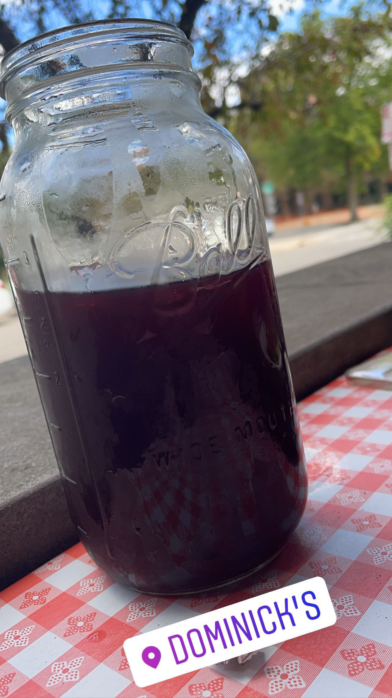
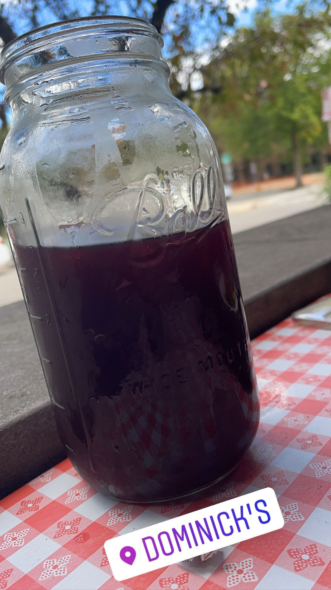
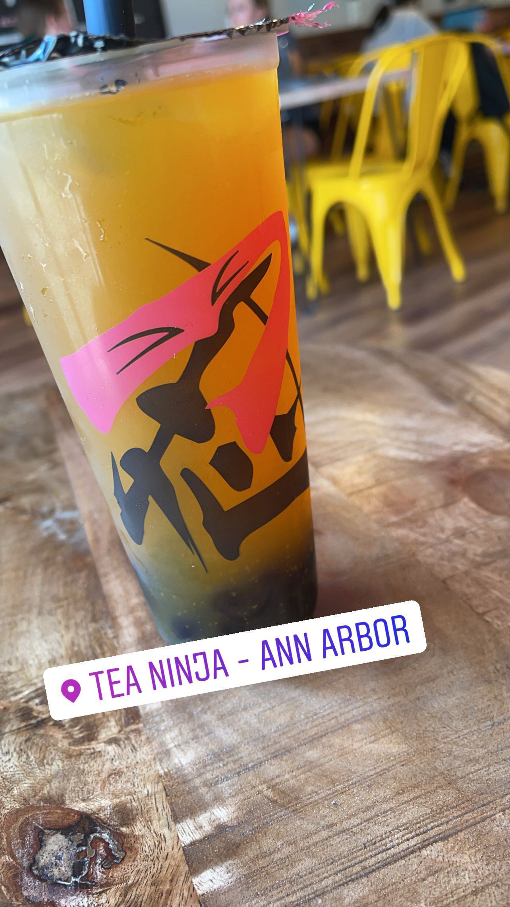
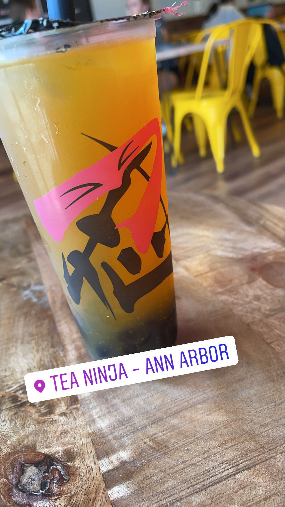

Food
Hey guys, as you know I love going out and trying new restaurants and spots. Here I shall list all the places i've been so far and my rating. Hope you enjoy.


 



 


I consider myself a gourmet and really love going to new food spots I really got inot trying new foods because in my home country of trinidad and Tobago, There were so many different kinds of food it I always had different options.
Similarly, I'm a pretty good chef, just super lazy. My favorite meal is Lasangna (yes just like Garfield). Even though I am usually in a pretty bad place mentally,food helps me to break away and think of happy thoughts. Unlike finals however. Hopefully this was somewhat interesting, sorry for boring you my dearest grader.